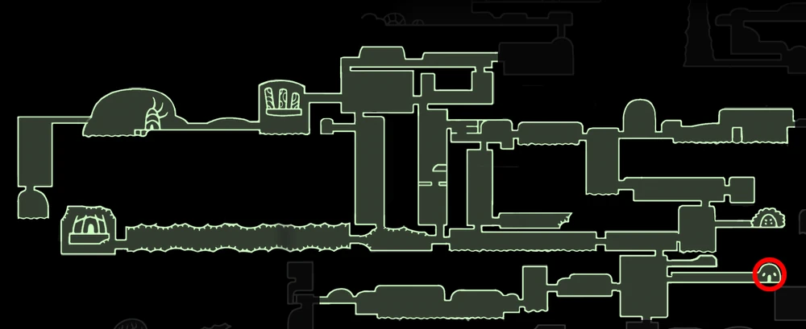

NO EYES
 Boss In Action
Boss In Action  Browse More Bosses
Browse More Bosses
No Eyes can be found in Greenpath, inside the Stone Sanctuary. The Lumafly Lantern is recommended to reach her.
No Eyes was a strong warrior who desperately wanted to rid the infection and tried many things to avoid being infected. She didn't and couldn't sleep knowing that if she dreams The Radiance would use her Light to infect her mind. She eventually became so crazy about protecting others and herself from the infection that she ripped out her own eyes and the eyes of other bugs so that they "couldn't see the Light", hence why she was called No Eyes. She and the other bugs still eventually succumbed to the infection. No Eyes' body was placed in the Stone Sanctuary, which was a place in complete darkness, which the bugs believed would help her avoid the Light even after her death. After being defeated, No Eyes starts talking to someone or something the Knight doesn't know and can't see, apologising for being frightened of them and starts praising them, and begs them to take "us" to a place where the Light cannot touch them, a place without dreams.
Health:
200 | 320 | 416 | 500 | 570
Scaling with Nail Upgrades 0 | 1 | 2 | 3 | 4 respectively.
Moves: